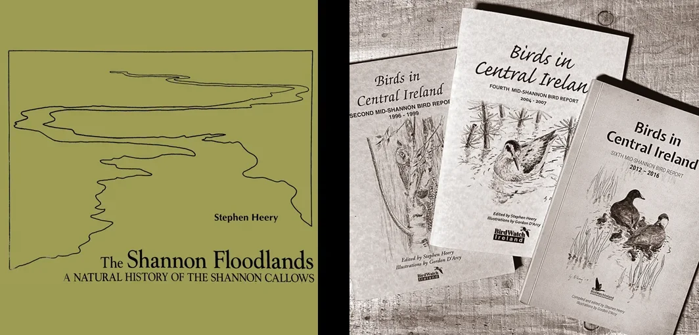
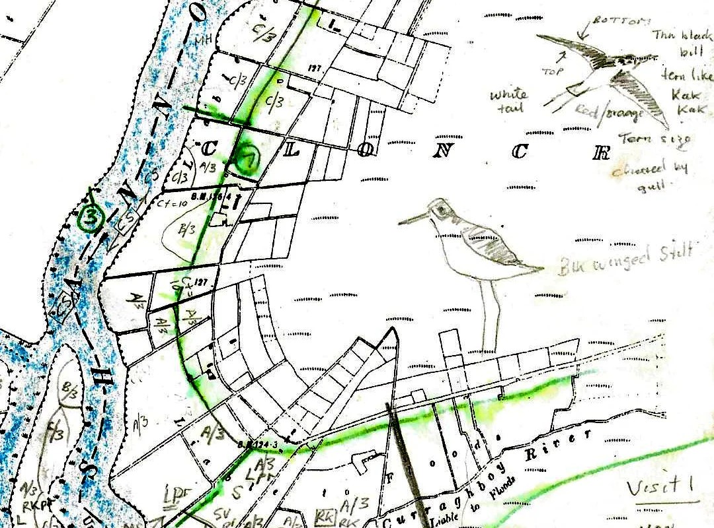
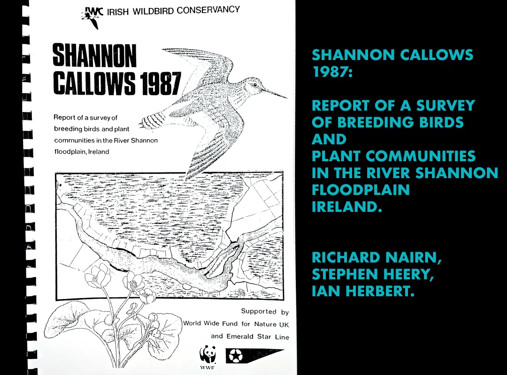

Stephen Heery

Stephen Heery is an ecologist and natural history author based in Ballinasloe, Co. Galway. He is best known for The Shannon Floodlands: A Natural History of the Shannon Callows (1993), a detailed and influential study of the ecology, wildlife and landscape of the Shannon Callows. His work draws on extensive field research and has contributed to scientific publications and environmental reports on grassland habitats, birdlife and conservation in the mid-Shannon region.
In addition to The Shannon Floodlands, Heery has authored or edited a series of Mid-Shannon Bird Reports for BirdWatch Ireland, documenting long-term trends in bird populations in central Ireland (including the First through Sixth Reports covering 1992–2016). These reports are valuable records of species distribution and conservation status across decades of observation.
His research also includes scientific work on flooding regimes and their ecological effects, such as studies on callow flooding patterns and their relationship to breeding bird populations.
Heery has engaged publicly on natural heritage issues, contributing articles such as Birds in Central Ireland for local publications and participating in events that raise awareness of the biodiversity and conservation challenges facing traditional floodplain and wet grassland habitats.
When Counting Becomes Keeping: Birds, Drawings, Time

